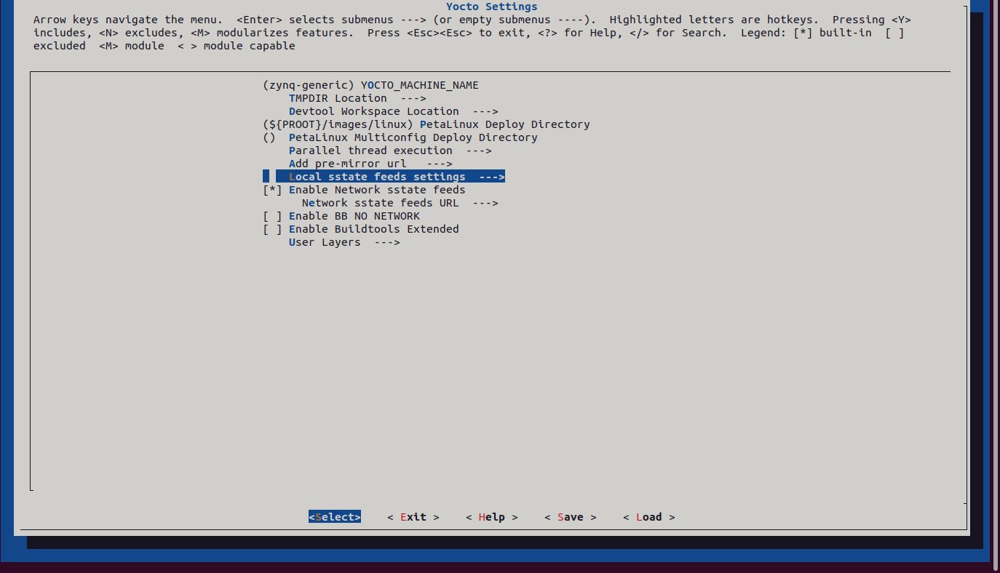

Toolchain Setup
Linux
Setup Linux Tools
DO NOT USE Ubuntu 24.04 LTS before Xilinx declare its support!
-
Download
Xilinx has composed their toolchain in a single downloader called unified installer for FPGA & SoCs, since a certain version (maybe 2020). Vivado, Vitis and Petalinux are all included.
Refer to: https://www.xilinx.com/support/download/index.html/content/xilinx/en/downloadNav/vivado-design-tools.html.
-
Pre-installation preparations
Install the following libs:
sudo apt install libncurses5 sudo apt install libtinfo5 sudo apt install libncurses5-dev libncursesw5-dev sudo apt install ncurses-compat-libsIf you skip this then the installer may freeze at the last step "Generating installed device list", I'm sure it happens on Ubuntu 24.04 LTS. DO NOT press cancel when this occurs - the installer would then delete the whole 100GB template download file in the worst case. You may simply kill the terminal on which the installer is running, and install the above-mentioned libs afterwards.
However, this is of course a hammer-like solution. I can't tell if there's is any configuration after the "generating device list" procedure left undone.
-
Download & Install
It is highly recommended to download the Xilinx tools as image file and manually install it afterwards. Otherwise there's risk that the installer simply delete everything as mentioned before.
Notice that you can only select either of Vitis platform or Petlinux at once. Run the installer again for the other one when the previous finishes.
Install the Petalinux where the root permission is not needed, instead of the default /tools/Xilinx/.
-
Install Hardware Drivers
-
(Optional) Add the toolchains to PATH.
nano ~/.bashrcAdd the following lines to the end of the file:
export PATH="$PATH:/tools/Xilinx/Vivado/2023.1/bin" export PATH="$PATH:/tools/Xilinx/Vitis/2023.1/bin" export PATH="$PATH:~/softwares/Petalinux/tools/common/petalinux/bin"Replace the path with your own.
Use Petalinux Local Mirror to Speed Up Kernel Building
(refer to https://xilinx-wiki.atlassian.net/wiki/spaces/A/pages/18842475/PetaLinux+Yocto+Tips#PetaLinuxYoctoTips-HowtoreducebuildtimeusingSSTATECACHE)
Petalinux downloads loads of stuffs (libs, drivers, etc.) from the Internet while building the kernel. It creates a SSTATE (Shared State) CACHE after downloading so that projects with different settings may share the common files instead of download them again.
However, when you delete the project without setting a global SSTATE path in prior, the downloaded cache is also removed. So the best practice is create a complete SSTATE CACHE manually at a safe place - in other words build up a local mirror of the remote server.
-
Download and decompress the cache from https://www.xilinx.com/support/download/index.html/content/xilinx/en/downloadNav/embedded-design-tools.html.
-
Go to your PetaLinux project and set the following options using petalinux-config:
$ petalinux-config ---> Yocto Settings ---> Add pre-mirror url ---> file://<additional download path> $ petalinux-config ---> Yocto Settings ---> Local sstate feeds settings ---> local sstate feeds url ---> <path to arm/ directory>

-
For setting up the download and shared state directories add the following variables in the
/project-spec/meta-user/conf/petalinuxbsp.conf file. DL_DIR = "<additional download path>" SSTATE_DIR = "<path to arm/ directory>"Personally I have installed the Petalinux under ~/Softwares/Petalinux, and put the SSTATE CACHE under ~/Softwares/Petalinux/sstate. On the other hand I chose ~/Softwares/Petalinux/download as the additional file download path. As an example, my DL_DIR and SSTATE_DIR would be:
DL_DIR = /home/<user>/Softwares/Petalinux/download SSTATE_DIR = /home/<user>/Softwares/Petalinux/sstate/arm